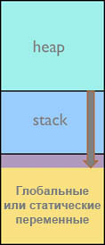
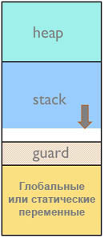
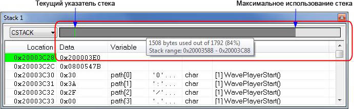
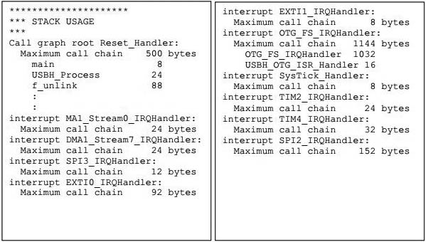
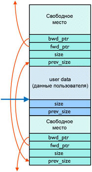
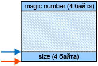
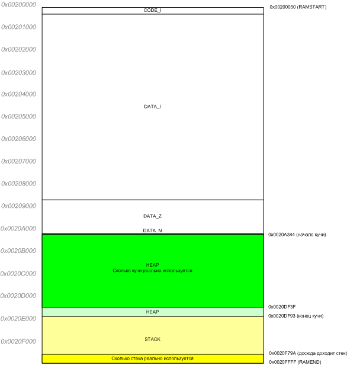
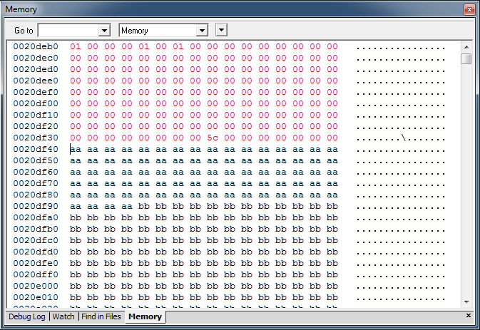

Проектирование стека и кучи в IAR

|
Проектирование стека и кучи в IAR |
|
|
|
|
Понятия стека (stack) и кучи (heap) фундаментальны для встраиваемой системы. Их настройка очень важна для стабильной и надежной работы системы. Некорректное использование может привести к тому, что Ваше встраиваемое устройство на микроконтроллере будет глючить самым непредсказуемым образом. Программист должен статически выбрать в памяти место расположения и размер как для стека, так и для кучи. Вычислить размер стека чаще всего очень трудно, за исключением совсем уж маленьких и простых встраиваемых систем, и недооценка использования стока может привести к серьезным ошибкам времени выполнения, которые бывает трудно найти. С другой стороны, переоценка места для стека означает бесполезную трату ценного ресурса памяти. Информация для самого худшего случая максимальной глубины стека очень полезна для большинства встраиваемых проектов, так как это значительно упрощает оценку, сколько места под стек нужно приложению. Переполнения памяти кучи происходят корректно, но такие случаи все равно неудобны, потому что очень мало встраиваемых приложений могут восстановить работоспособность в таких экстремальных условиях нехватки памяти. [Краткое введение в стек и кучу] Описание в этой статье сосредоточено на разработке надежного стека и кучи: как минимизировать стек и кучу безопасным способом. Настольные компьютерные системы (компьютеры PC) и встраиваемые системы одинаково страдают от общих ошибок в дизайне стека и кучи, однако полностью отличаются друг от друга в реализации многих других аспектов. Один пример различий в этих рабочих условиях - размер доступной памяти. Windows и Linux по умолчанию используют 1 и 8 мегабайт пространства под стек; этот размер даже может увеличиваться. Размер кучи ограничен только доступной физической памятью и/или размером файла подкачки. Встраиваемые системы, с другой стороны, имеют очень ограниченный размер по ресурсам памяти, особенно когда это память RAM. Несомненно здесь требуется минимизировать стек и кучу, чтобы уложиться в ограничения по памяти для этого рабочего окружения. Большинство малых встраиваемых систем не имеют механизма виртуальной памяти; выделения стека, кучи и глобальных данных (т. е. переменных, буферов TCP/IP, USB и т. д.) статические, и это происходит в момент сборки приложения. Мы рассмотрим специальные проблемы, которые возникают во встраиваемых системах, не касаясь того, как защищать стек и кучу от специально направленных атак. Описание пока не касается разработки на десктоп-системах и мобильных устройствах (телефоны, смартфоны). Превышение лимита. Превышение пределов ограничений в реальной жизни может быть иногда полезным, но иногда может создать для Вас проблему. Превышение пределов в программировании, когда это происходит с выделением данных, однозначно приведет к проблеме. В счастливом случае проблема может возникнуть сразу или во время тестирования системы, но может также случиться и слишком поздно, когда продукт попал к тысячам пользователей или был развернут в удаленном окружении. Переполнение выделенных данных может произойти в трех областях хранения данных; глобальные переменные (global), стек (stack) и куча (heap). Запись в массивы с превышением индекса или запись по адресу в указателе может привести к выходу за пределы памяти, выделенной для объекта (в таком случае могут быть испорчены другие важные данные). Некоторые попытки доступа к массиву могут быть проверены статическим анализом, например самим компилятором или чекером MISRA C: int array[32]; array[35] = 0x1234; Когда индекс вычисляется в выражении, статический анализ не сможет больше искать подобные проблемы. Обращения по указателям также сложны для трассировки статическим анализом: int* p = malloc(32 * sizeof(int)); p += 35; *p = 0x1234; Долгое время методы перехвата ошибок переполнения объектов были доступны для десктоп-систем (можно назвать некоторые из них: Purify, Insure++, Valgrind). Эти средства встраивали в код приложения специальные проверки обращений к памяти во время выполнения программы. Это происходит ценой снижения скорости выполнения кода приложения и увеличения размера кода, так что такой метод не может быть полезным для малых встраиваемых систем. Stack. Стек это область памяти, где программа сохраняет, к примеру, следующие данные: • Локальные переменные Время жизни переменных в стеке ограничено длительностью работы функции (или подпрограммы), которой они принадлежат. Как только функция выполнила возврат в код, который её вызвал, используемая ей память стека немедленно освобождается для последующих вызовов подпрограмм. Память стека выделяется статически программистом в процессе разработки приложения. Стек обычно растет вниз (в сторону уменьшения адреса в памяти), и если область памяти, выделенная под стек, недостаточно велика, то выполняющийся код перезапишет область памяти, лежащую ниже стека, и произойдет переполнение стека (см. рис. 1).  Рис. 1. Ситуация переполнения стека. Записываемая при переполнении стека область это то место, где находятся глобальные и статические переменные. Таким образом, недооценка места под стек может привести к серьезным ошибкам времени выполнения, таким как перезапись переменных, дикие указатели и испорченные адреса возврата. Все эти ошибки может быть трудны для обнаружения. С другой стороны, переоценка места под стек означает трату ресурсов оперативной памяти. Мы рассмотрим некоторые методы для надежного вычисления требуемого размера стека и детектирования проблем, связанных со стеком. Heap. Куча это то место, где размещена подсистема динамического выделения памяти (не путайте в данном контексте динамическую память с DRAM и SDRAM!). Динамическая память и куча может во многих случаях быть необязательной для применения во встраиваемых системах (может рассматриваться как опция). Динамическая память делает возможным использование одной и той же памяти совместно разными частями программы (имеется в виду не одновременное использование). Когда один модуль больше не нуждается в своей выделенной памяти, он просто возвращает её в общий пул кучи, после чего она может повторно использоваться каким-то другим модулем. Операциями выделения и освобождения памяти заведует специальная библиотека управления динамической памяти, предоставляющая функции наподобие malloc, calloc, realloc и free [] на языке C. Язык C++ использует библиотеку динамической памяти в операторах new и delete. Кучу также могут использовать сторонние библиотеки кода и операционные системы реального времени (RTOS []). Обычно куча одна, но их может быть и несколько. Некоторые особо продвинутые библиотеки даже могут использовать свои функции для обслуживания динамической памяти. Типичные примеры данных, которые размещаются в куче: • Объекты текущих данных Вычисление размера кучи может быть как очень трудно, так и вовсе невозможно для больших систем - из-за динамического поведения приложения. Например, количество памяти в куче, которую может потребовать для себя веб-сервер, может зависеть от количества одновременных сетевых подключений. Кроме того, довольно мало инструментов поддержки измерения утилизации стека в мире встраиваемых приложений, но некоторые методы мы рассмотрим. Важно поддерживать целостность кучи. Выделенное пространство данных типично сопровождается критичными данными по обслуживанию обработчика выделений памяти. Неправильное использование пространства выделяемых данных не только вводит риск повреждения других данных, то также может повредить служебные данные обработчика выделений памяти, что скорее всего приведет к полному краху приложения. Мы обсудим некоторые методы, помогающие проверить целостность кучи. Другой аспект использования кучи в том, что производительность кода реального времени с данными в куче становится неопределенным. Время выделения памяти зависит от таких факторов, как предыдущие выделения и освобождения памяти, наличие в куче "дырок" и от эффективности уборщика мусора. Когда разработчик учитывает каждый цикл выполнения кода для обеспечения прогнозируемого поведения в реальном времени, интенсивные выделения/освобождения памяти могут стать недопустимыми. Общие рекомендации в этой статье касаются в основном минимизации размера кучи в малых встраиваемых системах. [Разработка надежного стека] Почему вычислить размер стека так сложно? Есть много факторов, добавляющих сложности в вычислении максимального использования стека. Многие приложения сложны и реагируют на внешние события (event driven), в них есть сотни функция и множество прерываний. Есть вероятность, что функции обработки прерывания (ISR) могут запуститься в любой момент времени, и если разрешено вложение вызовов прерываний друг в друга, то ситуация становится еще более сложной для оценки. Это означает, что отсутствует легко сопровождаемый поток выполнения кода. Могут присутствовать косвенные вызовы (indirect calls) с использованием указателей на функции, где точка назначения вызова может зависеть от разных функций. Рекурсия и не снабженные подробными комментариями подпрограммы на ассемблере также будут создавать проблемы для тех, кто кочет вычислить максимальное использование стека по коду приложения. Многие микроконтроллеры реализуют несколько аппаратных стеков, например системный стек (system stack) и стек пользователя (user stack). Несколько стеков также реальны, когда используются встраиваемые RTOS наподобие µC/OS, ThreadX и другие, где каждая задача получает свою собственную область стека. Runtime-библиотеки и библиотеки сторонних производителей - еще один фактор усложнения расчета стека, поскольку исходный код этих библиотек и RTOS может быть недоступен. Также важно помнить, что изменения кода и планировки приложения могут сильно повлиять на использование стека. Разные компиляторы и разные уровни оптимизации также генерируют разный код, который также будет по-разному использовать стек. В итоге получается, что важно постоянно отслеживать максимальные требования к размеру стека. Как установить размер стека. Когда разрабатывается приложение, размер стека это один из необходимых учитываемых факторов, и нужен какой-то метод для определения размера стека, который Вам необходим. Даже если Вы выделите всю оставшуюся память RAM под область стека, все еще необходимо убедиться, что места для стека достаточно. Один очевидный метод проверки системы - поместить её в условия худшего случая, когда должно наблюдаться самое максимальное использование пространства стека. Во время этого теста нужен метод определения, сколько реально использовалось места в стеке. Это можно сделать в основном двумя способами: из распечаток текущего использования стека, или путем создания в памяти отчета трассировки использования стека после того, как был завершен прогон теста. Но, как уже упоминалось выше, в большинстве сложных систем условия самого худшего случая создать очень трудно. Фундаментальная проблема тестирования реагирующей на события системы с многими прерываниями - большая вероятность, что некоторые пути выполнения все-таки не будут покрыты тестом. Другой подход должен был бы вычислить теоретические максимальные требования к пространству стека. Очень просто понять, что невозможно вычислить вручную потребление стека полной системы. Это вычисление потребует инструмент, который может проанализировать всю систему. Этот инструмент должен работать либо с двоичным образом исполняемого кода, либо с исходным кодом. Двоичный инструментарий работает на уровне машинных инструкций, чтобы найти все возможные перемещения счетчика программы в коде и обнаружить самые худшие случаи пути выполнения. Утилита статического анализа исходного кода будет читать все используемые элементы компилируемого кода. В обоих случаях инструментарий должен быть в состоянии определить в каждом элементе компилируемого кода прямые и косвенные вызовы функции через указатели, вычисляя профиль консервативного использования стека через всю систему для всех деревьев вызовов. Инструменту анализа исходного кода также требуется знать, куда компилятор помещает стек, выравнивания ячеек памяти и временные ячейки компилятора. Самостоятельное написание подобных инструментов сложное занятие, однако есть коммерческие альтернативы, либо отдельные инструменты статического обсчета стека, либо инструменты, предоставляемые производителем решения для компиляции. Например, утилита вычисления стека доступна для ThreadX RTOS от Express Logic. Другие типы инструментов, у которых есть необходимая информация для вычисления максимального требования к стеку, это компилятор и линкер. Эта функциональность доступна для среды разработки IAR Embedded Workbench for ARM. Мы рассмотрим некоторые методы, которые можно использовать для оценки требований к размеру стека. Различные методы установки размера стека. Один из способов вычисления глубины стека - использование адреса текущего указателя стека. Это можно реализовать получением адреса аргумента функции или её локальной переменной. Если это сделать в начале функции main и для каждой из функций, на которую у Вас есть подозрение а большое использование стека, то Вы можете вычислить размер стека, который нужен приложению. Ниже приведен пример, где мы предполагаем, что стек растет от старших адресов памяти к младшим (так организован стек у большинства процессоров, в том числе MCS51, ARM, 8080): char *highStack, *lowStack;
int main(int argc, char *argv[]) { highStack = (char *)&argc; // ... printf("Текущее использование стека (глубина): %d\n", highStack - lowStack); }
// Самая "подозрительная" функция на предмет углубления в стек: void deepest_stack_path_function(void) { int a; lowStack = (char *)&a; // ... } Этот метод может дать довольно хорошие результаты в небольших системах с детерминистским поведением, но для многих систем может быть сложно определить самое глубокое использование стека при вложенных вызовах функций и прерываний, чтобы добиться ситуации самого плохого случая. Стоит заметить, что результаты, полученные этим методом, не учитывают использование стека функциями обработчиков прерываний. Есть вариант этого метода - периодически делать выборку значения указателя стека внутри прерывания таймера, срабатывающего с достаточно высокой частотой. Частота прерываний таймера должна быть максимально возможной, пока она не начинает влиять на производительность реального времени приложения. Типичные частоты могут быть в диапазоне 10..250 кГц. Достоинство этого метода - не нужно вручную искать функцию с самым глубоким использованием стека. Также можно определять использование стека функциями обработки прерывания (ISR), если эта функция обработчика прерывания может вытеснять другие прерывания. Однако следует учитывать, что функции ISR обычно выполняются очень быстро, и анализирующая функция прерывания может пропустить короткий вызов одного из других прерываний. void sampling_timer_interrupt_handler(void) { char* currentStack; int a; currentStack = (char *)&a; if (currentStack < lowStack) lowStack = currentStack; } Защитная зона стека (stack guard zone). Защитная зона стека это область памяти, размещенная непосредственно ниже стека, где стек оставляет следы, если происходит его переполнение. Этот метод всегда реализуется в настольных (больших) системах, где операционная система может быть просто настроена для детектирования ошибок защиты памяти в ситуациях переполнения стека. На малых встраиваемых системах без блока управления памятью (Memory Management Unit, MMU) защитная зона все еще может быть организована таким же способом, и это будет довольно полезно. Чтобы такая зона была достаточно эффективной, она должна иметь подходящий размер, чтобы поймать записи в эту защитную зону. Постоянные проверки содержимого защитной зоны могут быть реализованы программно, чтобы firmware приложение определяло, что содержимое этой защитной зоны было нетронуто. Самый лучший метод защитной зоны может быть реализован, если MCU оборудован (аппаратным) блоком защиты памяти (memory protection unit, MPU или MMU). В этом случае MPU может быть настроен таким образом, чтобы он срабатывал на записи в защитную зону. Если произошел такого рода недопустимый доступ, будет срабатывать исключение (exception), и обработчик исключения может записать или вывести в лог информацию о том, что произошло. Эту информацию можно будет впоследствии проанализировать.  Рис. 2. Стек с защитной (guard) зоной. Заполнение области стека известными данными. Одна из техник определения переполнения стека - заполнить все пространство стека заранее известной маской, например байтами 0xCD, перед тем, как приложение начнет свое выполнение. Всякий раз, когда приложение останавливается (например, с помощью отладчика), область памяти стека можно просмотреть в области его конца. В используемой области стека 0xCD не присутствует, потому что туда записывались адреса возврата и значения различных локально используемых регистров и переменных. Если в области стека не найдено значений маски (0xCD), то это означает, что стек переполнился. Хотя этот способ детектирования переполнения стека достаточно надежен, все равно нет гарантии, что переполнение стека будет обнаружено. Например, стек может некорректно вырасти, переходя через свои границы, и даже изменить память вне области стека, причем без модификации каких-либо байт в области стека. Также стек может быть поврежден в его рабочей области. Это может произойти, например, в случае грубой ошибки, когда приложение ошибочно изменяет области памяти (в том числе и стека), какие оно изменять не должно. Этот метод мониторинга стека широко используют отладчики. Это означает, что отладчик может отобразить использование стека подобно тому, как это показано на рис. 3. Обычно отладчик не обнаруживает переполнение стека, когда это произошло, он может только показать содержимое памяти стека, где будет видно заполнение данными.  Рис. 3. Окно стека в среде разработки IAR Embedded Workbench. Вычисленное линкером требование к максимальному размеру стека. Давайте теперь подробнее рассмотрим, как утилиты сборки приложения наподобие компилятора и линкера могут вычислить необходимый размер стека. В качестве примера мы будем здесь использовать компилятор и линкер IAR. Компилятор генерирует необходимую информацию, и при правильных обстоятельствах (когда программа работает ожидаемо для инструментария компиляции) линкер точно может вычислить использование стека для каждого корня графа вызовов (от каждой функции, которая не вызывается из другой функции, наподобие запуска приложения). Это вычисление размера стека будет точным только в том случае, когда присутствует точная информация по использованию стека каждой функцией приложения. Обычно компилятор будет генерировать эту информацию для каждой функции языка C, но в некоторых ситуациях Вы должны сами предоставить для системы информацию, относящуюся к стеку. Например, если в приложении присутствуют косвенные вызовы функций, indirect call (с использованием указателей на функции), то Вы должны предоставить список возможных функций, которые могут быть вызваны из каждой вызываемой функции. Вы можете сделать это с помощью директив pragma в файле исходного кода, или с помощью отдельного файла для управления использования стека (stack usage control file) в процессе линковки. void foo(int i) { #pragma calls = fun1, fun2, fun3 func_arr[i](); } Если Вы используете файл управления использования стека, то можете также предоставить информацию по использованию стека для функций в модулях, у которых нет информации по использованию стека. Тогда будет в состоянии генерировать предупреждения, также если отсутствует необходимая информация, например в следующих условиях приложения: • Имеется как минимум одна функция без информации по использованию стека. Когда разрешен анализ использования стека, в генерируемый map-файл линкера будет добавлена секция использования памяти (usage), где перечисляется каждый граф вызовов от корня в виде цепочки вызовов до самого глубокого уровня использования стека.  Рис. 4. Результат вычисленного линкером максимального использования стека. [Надежный дизайн кучи] Где тут можно сделать ошибку? Недооценка использования кучи может привести к ошибке при вызове malloc(), т. е. требуемая область памяти не будет выделена. Эту ситуацию можно очень просто отследить программно, проверяя результат вызова функции malloc(). Если она вернет NULL, то значит память не была выделена, но тогда может быть слишком поздно (если это произошло в рабочем изделии у заказчика). Это серьезная ситуация, поскольку в большинстве встраиваемых систем нет подходящего способа восстановления из ошибки по нехватке памяти в куче; есть только один доступный подходящий способ - перезапустить приложение. Переоценка использования кучи необходима из-за динамической природы работы кучи, однако слишком большое выделение памяти для кучи только впустую потратит ценные ресурсы памяти. При использовании кучи могут произойти две другие ошибки: • Перезапись данных кучи (переменные и указатели). Перед тем, как продолжить, давайте вспомним API выделения динамической памяти. void* malloc(size_t size); Функция malloc делает следующее: • Выделяет непрерывный блок памяти размера size байт. void free (void* p); Описание работы функции free: • Освобождает область памяти (ранее выделенный блок), на которую указывает аргумент p. void* calloc(size_t nelem, size_t elsize); Функция calloc работает подобно malloc(), но с тем отличием, что очищает выделенный блок памяти. void* realloc(void* p, size_t size); Описание работы функции realloc: • Работает подобно malloc(). В C++ следующие встроенные операторы языка используют динамическую память кучи: • Оператор new, работающий подобно malloc(). Имеется несколько вариантов реализации аллокатора динамической памяти. Наиболее часто сегодня используется Dlmalloc (Doug Lea’s Memory Allocator). Dlmalloc можно найти в Linux, а также во многих инструментах (библиотеках) разработки для встраиваемых систем. Dlmalloc свободно доступна для бесплатного использования (помещена в public domain). Внутренняя структура кучи вкрапляется данными, выделенными приложением. Если приложение запишет память вне выделенных данных, то оно может легко нарушить внутреннюю связанную структуру кучи. Рис. 5 дает некий упрощенный вид на то, как различные структуры данных окружают выделенные пользовательские данные (user data). Становится очевидным, что любая запись в область вне пользовательских данных серьезно повредит кучу.  Рис. 5. Окружение служебными данными выделенного из кучи блока для пользовательских данных. Вычисление требования к размеру кучи является нетривиальной задачей, если куча используется активно, т. е. когда в процессе работы программы происходит множество циклов выделения и освобождения блоков памяти (обычно это так и есть, иначе куча была бы не нужна). Большинство разработчиков для выбора размера кучи прибегают к методу проб и ошибок, потому что другие альтернативы слишком утомительны. Типичный алгоритм определения размера кучи: найти самый малый размер кучи, при котором приложение все еще работает, затем к полученному размеру добавляют 50% сверху. Предотвращение ошибок кучи. Есть некий набор общих ошибок, допускаемых программистами и тестировщиками кода, которых следует изначально избегать, чтобы снизить риск выпуска продукции, где есть ошибки кучи. • Ошибки инициализации Не инициализированные глобальные данные всегда инициализируются нулями. Хорошо известный факт, что можно легко забыть о том, что вызовы malloc(), realloc() и оператор new языка C++ ничего подобного не делают, т. е. выделенная область данных заполнена мусором. Однако есть специальный вариант malloc(), носящий имя calloc(), который инициализирует нулями выделенный блок для данных. Оператор C++ new вызовет соответствующий конструктор, где следует гарантировать, что все элементы данных сконструированного (выделенного из кучи) объекта будут правильно инициализированы. • Неправильное разделение скаляров и массивов На языке C++ есть разные операторы для скаляров и массивов: new и delete применяются для выделения и освобождения скаляров, и new[] и delete[] применяются для массивов. • Запись в уже освобожденную память Это либо повредит внутренние структуры данных аллокатора, либо эти данные будут перезаписаны позже в процессе легального выделения нового блока памяти. В любом случае это грубая ошибка, и подобные ошибки реально трудно перехватить и исправить. • Отсутствие проверки возвращенных значений Все вызовы malloc(), realloc() и calloc() возвратят указатель NULL, чтобы показать отсутствие свободной памяти (неудачное выделение блока памяти, out of memory). Настольные системы сгенерируют события отказа памяти (memory fault) и нехватки памяти (out-of-memory), так что эти ситуации просто отследить еще в процессе разработки. Встраиваемые системы могут быть устроены по-другому: по адресу 0 у них может быть память программ FLASH, и в них могут происходить больше других тонких ошибок. Если в Вашем MCU есть блок защиты памяти (memory protection unit, MPU), то следует сконфигурировать его таким образом, чтобы генерировались ошибки доступа к памяти при попытке доступа во FLASH и другие критические области (ОЗУ, где находится исполняемый код, защитная область стека и т. п.). • Освобождение несколько раз одного и того же блока памяти Это скорее всего повредит внутренние структуры аллокатора памяти, и такую ситуацию сложно определить и исправить. • Запись вне выделенной области Это также повредит внутренние структуры аллокатора памяти, и такую ситуацию сложно определить и исправить. Последние три вида ошибок проще обнаружить, если Вы напишете обертки вокруг стандартных функций malloc(), free() и связанных с выделением памяти функций. Эти обертки должны выделять дополнительные байты памяти, где должна размещаться информация, необходимая для проверок целостности. Пример организации выделения памяти для данных такой обертки показана на рис. 6.  Рис. 6. Выделение памяти тестовой оберткой MyMalloc. Здесь поле "magic number" перед данными (user data) используется для детектирования повреждения и будет проверен, когда память будет освобождаться. Поле size, находящееся ниже пользовательских данных, используется оберткой для free() (функция MyFree), чтобы найти "magic number". Пример оберток, показанный ниже, использует 8 байт дополнительной нагрузки на одно выделение памяти, что вполне допустимо для большинства приложений. Этот пример также показывает, как глобально переопределить (override) операторы new и delete языка C++. Пример перехватит только ошибки такого рода, что вся выделенная память не была соответственно освобождена в какой-то момент времени. Для некоторых приложений такая проверка может не потребоваться. В этом случае обертка должна вести список всех выделений памяти, и периодически проверять все выделения, записанные в этом списке. Дополнительная нагрузка реализации этого может быть не такая большая, как это может показаться на первый взгляд, поскольку встраиваемые системы обычно не очень интенсивно используют динамическую память, сохраняя размер списка выделений в разумных пределах. #include < stdint.h> #include < stdlib.h>
#define MAGIC_NUMBER 0xefdcba98 uint32_t myMallocMaxMem;
void* MyMalloc(size_t bytes) { uint8_t *p, *p_end; static uint8_t* mLow = (uint8_t*)0xffffffff; /* самый малый адрес, возвращенный вызовом malloc() */ static uint8_t* mHigh; /* самый большой адрес + data, возвращенный malloc() */ bytes = (bytes + 3) & ~3; /* гарантирует выравнивание для magic number */ p = (uint8_t*)malloc(bytes + 8); /* учет области 2x32-бит для size и magic number */ if (p == NULL) { abort(); /* ошибка нехватки памяти, out of memory */ } *((uint32_t*)p) = bytes; /* запомнить размер size */ *((uint32_t*)(p + 4 + bytes)) = MAGIC_NUMBER; /* записать magic number после пользовательского выделения */ /* Грубый метод оценки максимального используемого размера с момента запуска приложения. */ if (p < mLow) mLow = p; p_end = p + bytes + 8; if (p_end > mHigh) mHigh = p_end; myMallocMaxMem = mHigh - mLow; return p + 4; /* выделяемая область начинается после size */ }
void MyFree(void* vp) { uint8_t* p = (uint8_t*)vp - 4; int bytes = *((uint32_t*)p); /* Проверка, что magic number не был поврежден: */ if (*((uint32_t*)(p + 4 + bytes)) != MAGIC_NUMBER) { abort(); /* Ошибка: переполнение данных или освобождение блока памяти, который уже был освобожден */ } *((uint32_t*)(p + 4 + bytes)) = 0; /* удаление magic number, чтобы можно было обнаружить ошибочно-повторное освобождение блока памяти */ free(p); }
#ifdef __cplusplus // Глобальное переназначение операторов new, delete, new[] и delete[]. void* operator new (size_t bytes) { return MyMalloc(bytes); } void operator delete (void *p) { MyFree(p); } #endif Как установить размер кучи. Итак, как можно определить требуемый минимальный размер кучи для приложения? Из-за того, что может произойти фрагментация памяти в процессе повторяющихся циклов освобождения и выделения памяти, ответ на этот вопрос нетривиален. Рекомендуется запустить тест системы при условиях, когда динамическая память будет использоваться по максимуму. Важно выполнить этот тест несколько раз, чтобы проанализировать переход от малого использования памяти кучи к интенсивному, и оценить её возможную фрагментацию. Когда тесты будут завершены, максимальный уровень выделения памяти в куче сравнивают с реально используемым размером кучи. Реальный размер кучи выставляют, добавляя от 25% до 100% к максимально определенному задействованному размеру кучи, в зависимости от того, как устроено приложение. Для систем, которые тестируются на дестопных системах путем эмуляции sbrk(), максимальное использование кучи можно узнать через bymalloc_max_footprint(). Для встраиваемых систем, которые не эмулируют sbrk() (а среда разработки IAR Embedded Workbench как раз относится к таким встраиваемым системам), обычно для аллокатора памяти предоставляют память кучи одним куском. В таком случае вызов malloc_max_footprint() становится бесполезным; он просто вернет размер всей кучи. Одним из решений может быть вызов mallinfo() после каждого вызова malloc(), например в обертке функции, описанной раннее, и получить обзор общего выделенного пространства (mallinfo->uordblks). Функция mallinfo() выполняет довольно интенсивные вычисления, так что её использование может повлиять на производительность системы. Лучший метод - записывать максимальные расстояния между выделенными областями памяти. Это просто осуществить, и показано в примере обертки; максимальное значение записывается в переменной myMallocMaxMem. Этот метод будет работать, когда куча предоставлена в одном непрерывной (не состоящей из отдельных кусков) области памяти. [Стек и куча в IAR 4.41] В этой старой версии IAR распределение памяти задается в файле *.xcl, который настраивается в опциях проекта (Options... -> Linker -> закладка Config -> Linker command file). Стек начинается от старших (самых больших) адресов памяти и растет к нижним (самым малым адресам), навстречу к функциям __ramfunc и глобальным переменным. Вот пример настройки в XCL-файле, когда кучи нет, и определен только стек размера 400 байт: //************************************************************************* // Сегменты стека и кучи. //************************************************************************* -D_CSTACK_SIZE=(100*4) -D_IRQ_STACK_SIZE=(3*8*4) -D_HEAP_SIZE=0 Если в проекте определена куча, то она находится сразу за локальными переменными, и растет навстречу стеку. Вот другой пример, где определена куча размера 0x3C50 и стек размера 0x1D00: -D_CSTACK_SIZE=(1D00) -D_IRQ_STACK_SIZE=(3*8*4) -D_HEAP_SIZE=3C50 Вот так может выглядеть карта памяти RAM микроконтроллера AT91SAM7X256 для второго примера:  Определить, насколько корректно заданы размер кучи и размер стека, можно с помощью заполнения области кучи и стека заранее известным значением байта. Например, всю память кучи можно заполнить байтом 0xaa, а всю свободную память стека можно заполнить байтом 0xbb. Это целесообразно делать в функции void AT91F_LowLevelInit(void), которая находится в модуле Cstartup_SAM7.c. Пример такого заполнения: void AT91F_LowLevelInit(void) { ...
//Заполнение кучи известным значением 0xAA: #define HEAP_BEGIN 0x0020A344 //взято из map-файла PImain.map #define HEAP_SIZE 0x3C50 //взято из map-файла PImain.map memset((void*)HEAP_BEGIN, 0xAA, HEAP_SIZE); //Заполнение стека известным значением 0xBB: #define STACK_BEGIN (HEAP_BEGIN+HEAP_SIZE) //стек начинается сразу за кучей #define STACK_SIZE 0x1D00-0x0100) //взято из файла at91SAM7X256_FLASH.xcl //с отступом 0x0100 байт от конца памяти memset((void*)STACK_BEGIN, 0xBB, STACK_SIZE); } Как узнать значения HEAP_BEGIN, HEAP_SIZE, STACK_BEGIN, STACK_SIZE. HEAP_BEGIN задает самый младший адрес области памяти кучи, а константа HEAP_SIZE задает размер заполняемой области. Значение HEAP_BEGIN можно узнать опытным путем в отладчике по адресу первого выделенного блока (через malloc или new), или если заглянуть в конец map-файла, раздел "SEGMENTS IN ADDRESS ORDER", там будет указаны начало и конец кучи, пример (параметры кучи выделены жирным шрифтом): **************************************** * * * SEGMENTS IN ADDRESS ORDER * * * **************************************** SEGMENT SPACE START ADDRESS END ADDRESS SIZE TYPE ALIGN ======= ===== ============= =========== ==== ==== ===== ICODE 00001000 - 0000111B 11C rel 2 CODE 0000111C - 0000C5C7 B4AC rel 2 INITTAB 0000C5C8 - 0000C5EB 24 rel 2 DATA_ID 0000C5EC - 00014B6F 8584 rel 2 DATA_C 00014B70 - 0001651F 19B0 rel 2 CODE_ID 00016520 - 000169A7 488 rel 2 ?FILL1 000169A8 - 0003FFFF 29658 rel 0 CODE_I 00200050 - 002004D7 488 rel 2 DATA_I 002004D8 - 00208A5B 8584 rel 2 DATA_Z 00208A5C - 0020A33D 18E2 rel 2 DATA_N 0020A340 - 0020A343 4 rel 2 HEAP 0020A344 - 0020DF93 3C50 rel 2 INTRAMEND_REMAP 00210000 rel 2 HEAP_SIZE можно узнать из файла XCL в параметре HEAP_SIZE, или из того же map-файла, см. параметр SIZE таблицы выше. STACK_BEGIN задает самый младший адрес области памяти стека, а STACK_SIZE задает размер заполняемой области. Значение STACK_BEGIN равно следующему за кучей адресу, а STACK_SIZE выбирается таким образом, чтобы заполнение памяти байтом 0xBB гарантированно не перекрыло содержимое стека, действующее в настоящий момент. После запуска программы в рабочий режим устанавливают условия, при котором должно наблюдаться максимальное использование стека и кучи. Дают программе некоторое время поработать, после чего останавливают отладчик, и после этого в дампе памяти можно увидеть, насколько далеко продвинулось заполнение стека и кучи. Те места, которые еще свободны, будут заполнены байтами 0xAA и 0xBB для кучи и стека соответственно. Ниже на скриншоте показано, как может выглядеть память кучи и стека. Видно, что выделение памяти в куче подошло к своему пределу, дополнительное выделение памяти в куче может привести к переходу на область стека:  [Ссылки] 1. Mastering stack and heap for system reliability site:iar.com. |